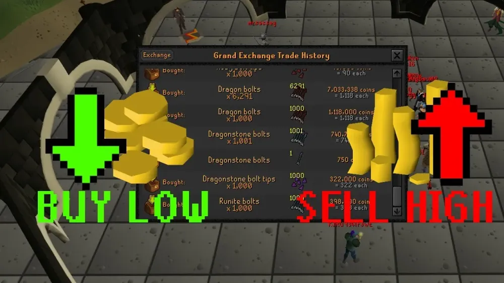
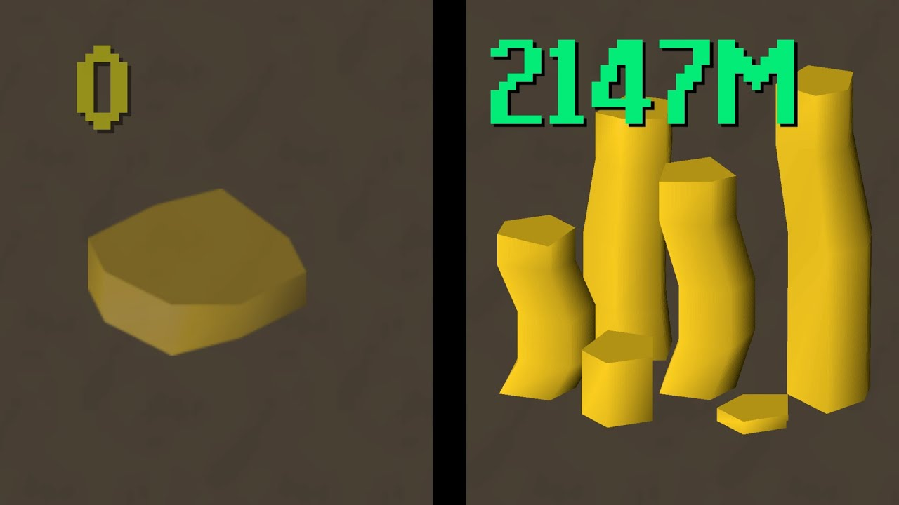

An Introduction to the OSRS Economy
About Me
My professional background is in the U.S. Air Force, where I specialize in aircraft armament systems. My career has provided some amazing experiences, including being stationed in Alaska, Arizona, and now Florida. Outside of my service, my main focus is my family. I have a beautiful wife and two kids, and we all share a passion for getting outdoors and exploring, whether it's fishing, going to the beach, or just enjoying the new scenery.
When I get some free time, my biggest hobby is playing Old School RuneScape. My interest goes beyond just playing; as a computer science student, I love to code my own plugins for the RuneLite client using Python. This technical side of gaming is what really drew me to the game's complex, player-driven economy. I find it fascinating to analyze the market and play the in-game Grand Exchange (Stock Market), which is what inspired me to create this entire website.
My Favorite OSRS Links
OSRS Images
The center of the OSRS economy, the Grand Exchange.

The goal of it all: a stack of gold.

Unit 2 Form
Click here to see my Unit 2 form assignment.
Unit 2 Form